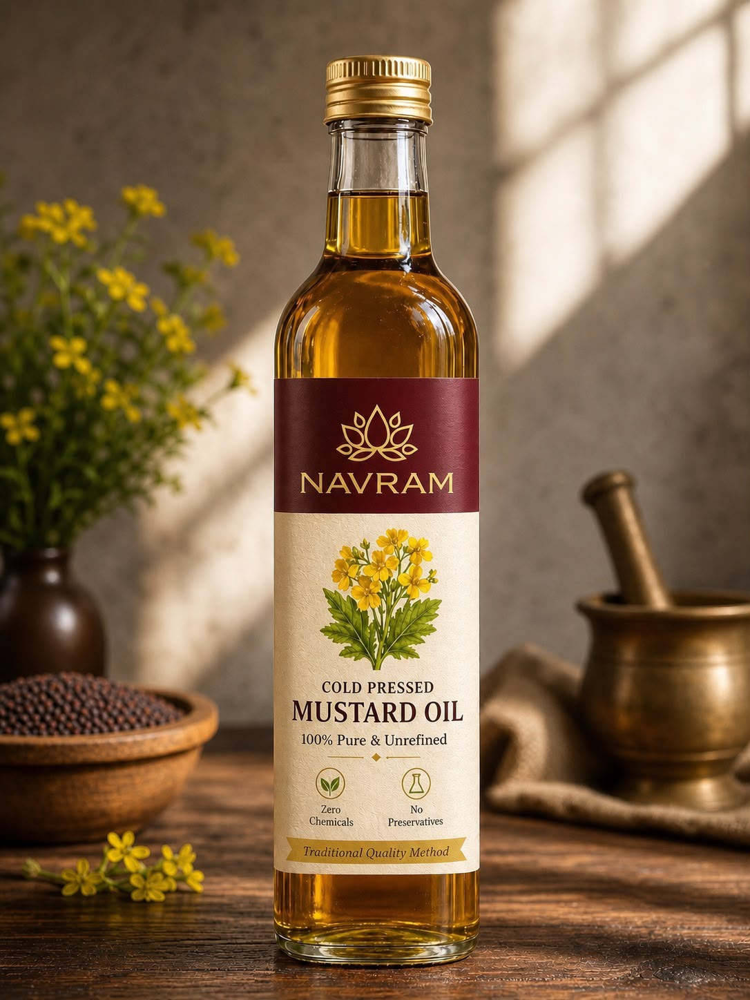

100% Pure & Unrefined
One ingredient: mustard seeds. Nothing blended in, nothing stripped out.
Kachi Ghani · Village Hasanpur Kalan, Meerut
Traditional stone-and-wood, unrefined strength — nothing added, nothing taken away.
Pressed slow, at low temperature, the way our village has pressed it for generations. No preservatives. No chemicals. No refining. Just 100% mustard seed, and the natural sediment that proves it.
Why Navram
Refining removes impurities — but it also removes what makes mustard oil worth having. We skip that step on purpose.
One ingredient: mustard seeds. Nothing blended in, nothing stripped out.
Cold-pressing keeps the oil stable naturally — no additives needed to make it last.
No solvents, no bleaching, no deodorising. What leaves the ghani is what reaches your kitchen.
Slow stone-pressing at low temperature, the way it's been done in our village for generations.
Sourced and pressed in Hasanpur Kalan, Meerut, Uttar Pradesh.

Product Showcase
Ingredients: 100% Mustard Seeds
Note: natural sedimentation may occur in cold-pressed oil — that's a sign of purity, not a flaw.
| Parameter | Value |
|---|---|
| Energy | 889 kcal |
| Fat | 99.89 g |
| Saturated Fat | 5.71 g |
| Mono-unsaturated Fat | 67.14 g |
| Poly-unsaturated Fat | 27.14 g |
| Cholesterol | 0 mg |
| Iron | 2 mg |
| Vitamin E | 44.5 mg |
How It's Made
Mustard seeds are selected from trusted growers around Meerut, cleaned, and checked by hand before pressing.
Seeds are crushed in a traditional wood-and-stone ghani, at low speed and low temperature, so the oil keeps its natural pungency, colour, and nutrients intact.
The oil is filtered and bottled with no further processing — no refining, no bleaching, no deodorising.
Scan the QR on the bottle to see our production process, or ask us on WhatsApp for a video.
Launching Soon
We're setting up secure checkout and order tracking so you can order with zero accounts, just like it should be. In the meantime, message us on WhatsApp and we'll personally note down your interest.
Message Us on WhatsAppQuestions
Natural sedimentation can occur in cold-pressed oil — it's a sign of purity, not a defect. Since nothing is refined or filtered aggressively, some natural particulates may settle over time. Give the bottle a gentle shake before use.
Store in a cool, dry place, away from direct sunlight. Keep the cap tightly closed after each use. Best before 9 months from the date of packaging.
Once online ordering is live, most orders will be dispatched within 24–48 hours and delivered within 3–7 business days depending on your location, with updates sent on WhatsApp. Ordering isn't open yet — message us on WhatsApp for the latest timeline.
If your bottle arrives damaged or leaking, message us on WhatsApp with a photo within 48 hours of delivery for a free replacement or refund. Since this is a consumable food product, we can't accept returns of opened bottles for reasons other than quality issues.
No. Once online ordering opens, you'll just fill a short form or message us on WhatsApp — your Order ID plus phone number will be all you need to track the order. No password, no sign-up.
Yes — tap any "Message Us on WhatsApp" button on this page, or message us directly. We're happy to answer questions about the oil and keep you posted on our launch.
Our Story
Navram is pressed in the village of Hasanpur Kalan, on Garh Road in the Meerut district of Uttar Pradesh — a region where mustard has been grown and pressed for generations. We work with a traditional Kachi Ghani method: slow stone pressing at low temperatures that keeps the oil's natural pungency, colour, and nutrients intact, instead of stripping them out through industrial refining.
No shortcuts, no chemical processing, no blending with cheaper oils. Just mustard seed, pressed the way it always has been, bottled close to where it's grown.